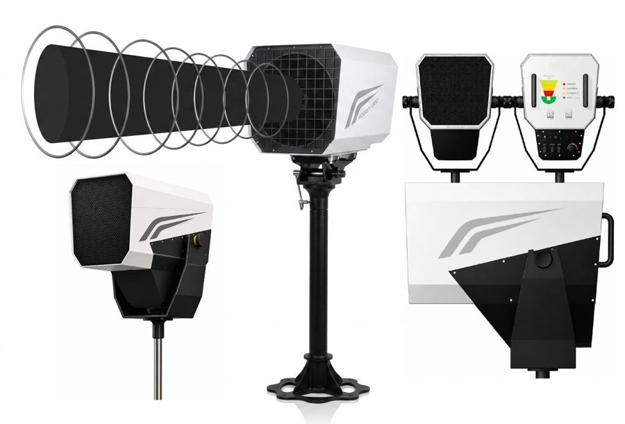

Roger-1200
Flagship long range acoustic device
Features
- High sound power: 151 dB
- Clear voice message: up to 1 km
- Long range notification: up to 2 km (recorded signal)
- Sound impact range: up to 100 m
- Composed of acoustic unit and amplifier
Specification
| Voice level | Around 80 dB @ 1 km |
| Frequency range | 200 Hz – 6 kHz |
| Acoustic beam width | ±15° @ 1 kHz (-3dB) |
| Power input | 100 – 240 VAC |
| Acoustic unit size | 44 (W) x 62 (H) x 80 (D) cm |
| Weight | 20 kg (without stand and cradle) |